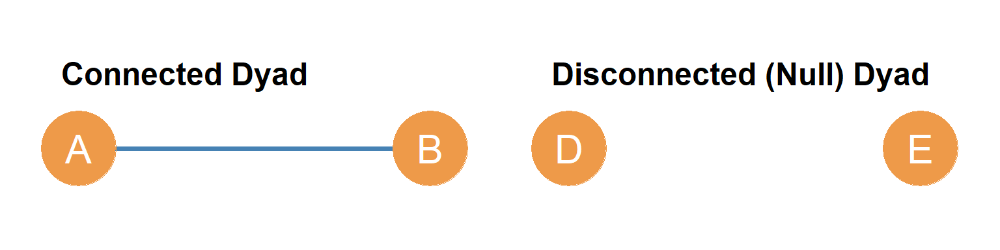
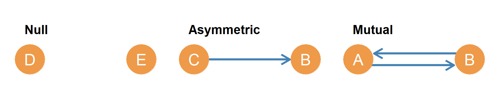
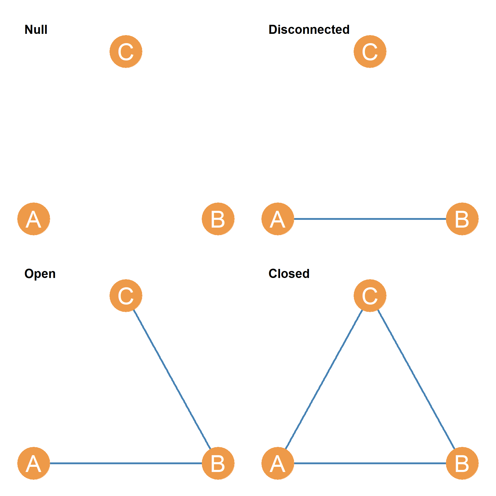
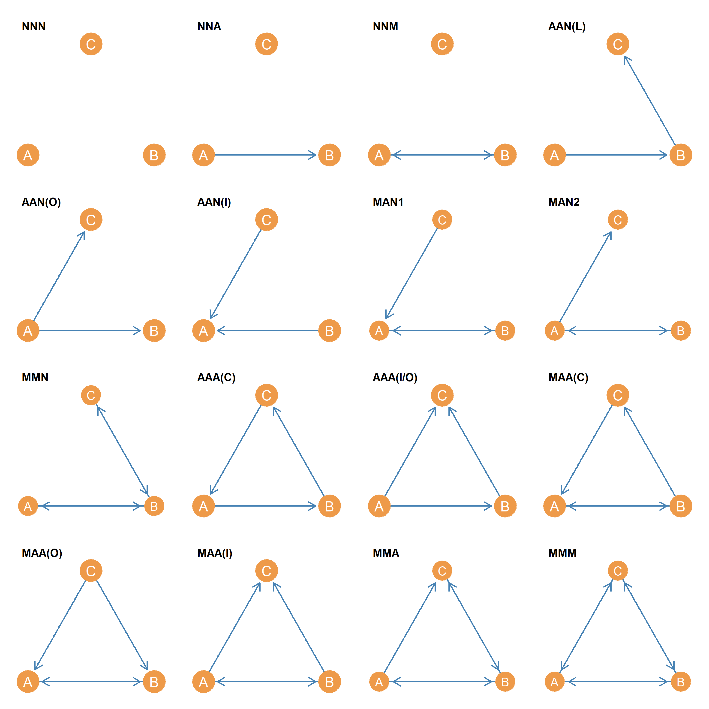

In a graph, every pair of nodes, whether joined by an edge or not, is referred to as a dyad. Essentially, a dyad is any subgraph of order two of a larger graph. Generally researchers only refer to dyads when describing features of the network, although it is important to remember that ties that do not exist, but could exist, may be socially meaningful.
Additionally, when we consider the relationship among sets of three actors, we describe this as a triad. Triads have very important sociological properties that we will explore in other lessons. Dyads, triads, and larger motifs constitute the (lego-like) building blocks of social networks. For now, however, the terms provide a language that we can use to describe parts of the graph.
Crucially, the possible types of dyads we can find in a network depend on the type of ties that compose the network. In ?@sec-ties, we introduced three fundamental types of ties based on their directionality and mathematical properties: symmetric, asymmetric, and anti-symmetric ties. We now connect these tie types to the distinct types of dyads they can generate.
As we saw in ?@sec-ties, some relations lack any inherent directionality because mutuality (or reciprocity) is built in by construction. These are symmetric ties, represented by undirected graphs.
Using ?@fig-undirected as the reference graph \((G)\), we can define a subgraph \((G')\) containing only nodes A and B. This is shown in the panel labeled Connected Dyad in Figure 1. In the same way, we could define a subgraph containing only nodes D and E (shown in the panel labeled Disconnected (Null) Dyad in Figure 1). Because undirected graphs do not allow directionality, every pair of actors is either part of a connected or a disconnected dyad.
Both types of dyads are defined by subgraphs of the same order (two), but they are different in size. The disconnected dyad is size zero (contains zero edges), and the connected dyad is size one (contains one undirected edge).

Many social relationships allow for inherent directionality where reciprocity is possible but not guaranteed. These are asymmetric ties, represented by directed graphs (or digraphs). For these ties, reciprocity is an empirical event, meaning we can find three distinct kinds of dyads:

In standard social network analysis, this three-fold classification of dyads in directed graphs is referred to as the MAN classification, which stands for Mutual (reciprocal), Asymmetric (non-reciprocal), and Null (disconnected).
Using the terms reciprocal, non-reciprocal, and disconnected helps us avoid conceptual confusion. Notice that a reciprocal dyad under an asymmetric relation is actually composed of a pair of directed edges! When we talk about an asymmetric tie, we are describing a type of relationship (where directionality is allowed); but when we talk about a non-reciprocal dyad, we are describing a realized configuration of a pair of nodes where reciprocity failed to occur empirically.
A lot of the time we collect social network information that has a directed basis. For instance, we ask people whether they “know” someone, or whether they consider somebody a “friend.” These types of network data are called nominations, and they are very common in social network analysis. For instance we may ask Jennifer whether she nominates Mariah as a “friend,” and she says yes. But Mariah might fail to nominate Jennifer back! This creates a situation where directed networks are filled with non-reciprocal dyads, even if we conceptually think of friendship as symmetric (Carley and Krackhardt 1996).
In anti-symmetric ties, reciprocity is strictly forbidden (\(AB \implies \neg BA\)). Examples include hierarchical relations such as “is boss of”, “is parent of”, or flow relations where a transaction cannot be reversed.
Because mutual interaction is structurally or logically impossible under anti-symmetric ties, reciprocal dyads cannot occur. Therefore, anti-symmetric ties can only yield two types of dyads:
This restriction drastically simplifies the dyad census of anti-symmetric networks (see ?@sec-dirgraphsmetrics): every pair of nodes is either completely disconnected or connected by a strictly non-reciprocal arrow.
We could do the same thing we did with dyads (subgraphs of order two) with the different subgraphs of order three in a graph. These are called triads. Just as with dyads, the possible configurations of triads depend heavily on the nature of the relationship (the tie type) we are studying.
If we are examining a symmetric relationship (such as siblings or co-membership), the network is represented as an undirected graph. Because undirected dyads can only be either connected or disconnected, there are only four possible undirected triad configurations. These are shown in Figure 3.

Take for instance, the subgraph defined by nodes B, C, and F in the graph shown in ?@fig-undirected. This is represented by the panel labeled Null in Figure 3. It shows three people who are not connected to one another! Like strangers in a park sitting on three different benches. This is called the null triad.
Now let’s define a subgraph using nodes A, C, and E. This is represented by the panel labeled Disconnected in Figure 3. Now this looks like a pair of friends A and C, in the same room with a stranger (E) whom they are not acquainted with. This is called the disconnected triad because the subgraph formed by the three nodes is disconnected, as defined earlier; there is no way that either A or C can reach E, given that E is an isolate in the subgraph.
We can continue. Let’s define a subgraph from the larger graph shown in ?@fig-undirected, but this time we will pick nodes A, B, and C. This is represented by the panel labeled Open in Figure 3. This time, there is one person, node A, who is acquainted with two other people, nodes B and C, but they don’t seem to know one another. It’s like when you have friends from work and friends from school who have never met. This is called the open triad because even though the subgraph is connected (there are no isolate nodes like in the disconnected case), there is an “open hole” in the triad separating nodes B and C. Perhaps A should introduce their friends to one another!
One last one. Let’s define a subgraph from ?@fig-undirected, but this time let’s pick nodes A, D, and F. This is represented by the panel labeled Closed in Figure 3. Now we have three friends all of whom know one another! So there are three distinct pairs of relations in the triad: AD, AF and DF. It’s like that group of three friends that always seems to hang out together. This is called the closed triad because there is no room to add more links to it. It is also called the closed triad because it is the configuration you get when you add a final link to the open triad (thus “closing” it).
As shown in Figure 3, in an undirected graph, there can only be these four types of triads. So every threesome of actors is part of a null, disconnected, open, or closed triad. All four triads are subgraphs of the same order (three), but they are different in size. The null triad is size zero, the disconnected triad is size one, the open triad is size two, and the closed triad is size three.
Dyads, triads, and subgraphs of higher order (called network motifs) are the building blocks of larger network structures in society (Milo et al. 2002).
In anti-symmetric ties (e.g., hierarchical relations like “is boss of”), reciprocity is strictly forbidden (\(AB \implies \neg BA\)).1 This mathematical necessity imposes a powerful structural constraint on the triads that can form in the network.
Because any reciprocal (mutual) dyad is completely forbidden, any triad containing a mutual connection is also forbidden! This rules out 9 of the 16 possible directed triad configurations (such as \(NNM\), \(MMN\), \(MMA\), or \(MMM\)) shown in Figure 4.
Under anti-symmetric ties, there are exactly seven permitted directed triadic configurations (which can be seen as specific panels in the complete set of directed triads shown in Figure 4):
This mathematical pruning simplifies the analysis of hierarchical systems composed of anti-symmetric ties, especially when we eliminate the cycle to create a strict hierarchy (see ?@sec-dominance). In formal organizations, for example, we expect to see transitive triads \(AAA(I/O)\) (representing clean chains of command), while cycles \(AAA(C)\) are structurally avoided as they introduce circular authority paradoxes.
When relationships are asymmetric (e.g., friendship, advice, or texting), reciprocity is allowed but not guaranteed. In these directed networks, because dyads can take on any of the three states (disconnected, non-reciprocal, or reciprocal), all sixteen directed triad configurations of the classic MAN Triad Census can occur.
Let us go through them systematically to understand how they are composed of different combinations of Mutual (M), Asymmetric (A), and Null (N) dyads.

The full sixteen-member set of possible directed triadic subgraphs is shown in Figure 4.
Just as in the undirected case, we can enumerate all the directed triads that exist in a directed graph. However, now that we are talking about threesomes under asymmetric ties, things get more complicated because we have a larger number of combinations to deal with. Let us go through them.
First, it is useful to think about what we are dealing with. With a subgraph of order three, we have three “slots” in the structure to consider. Each of these slots is a directed dyad. Thus, a triad can also be thought of as a concatenation of three directed dyads. That means that in a directed dyad, each of the slots can only be in one of three states (just like regular directed dyads): Mutual (M), Asymmetric/non-reciprocal (A), or Null/disconnected (N)!
So we know that right off the bat, one of the configurations is just going to be composed of three null dyads. Let’s call it \(NNN\), represented by the panel labeled NNN in Figure 4.
Another set of configurations is composed of disconnected directed triads that feature one connected dyad and two null dyads. Let’s call them \(NNC\) configurations. However, while there was only one such configuration in the undirected triad case, there are two in the directed triad case, because there are two kinds of directed connected dyads (non-reciprocal and reciprocal). - One of the disconnected directed triads has two null dyads and one non-reciprocal connected dyad. This is represented by the panel labeled NNA in Figure 4. - The other one has two null dyads and a reciprocal connected dyad. This is represented by the panel labeled NNM in Figure 4.
Now let’s think about directed triadic configurations featuring two asymmetric directed edges and one null dyad. These are directed versions of the open triad we considered in the undirected case. Here, edge directionality generates distinct configurations even when the number of links within the triad is the same (in this case, two). So let’s call this configuration set \(AAN(*)\), where the \(*\) distinguishes between the different arrangements:
Now, let’s consider cases where: (a) the triad is both connected and open, and (b) there is one reciprocal dyad in the triad. There are two of these cases, represented by the panels labeled MAN1 and MAN2 in Figure 4. The only difference between them is whether the non-reciprocal edge is going in one direction or the other. Think of the first case as a situation where you have two friends who are friends with each other, but only one of them is your friend. In the second case, you are friends with one of them, but not the other.
Finally, let’s consider the case where: (a) the triad is both connected and open, and (b) there are two reciprocal dyads in the triad. There is only one case like this, represented by the panel labeled MMN in Figure 4. This is a situation where you have two friends who are friends with each other, and you are friends with one of them, but not the other. This is a very common situation in real life, and it is often the source of tension in social groups (e.g., when you feel left out of a friendship between two other people).
Now, let’s consider the cases of closed directed triads. These are triads featuring three connected dyads. Once again, there was only one option in the undirected case, but there is a much larger number in the directed case because dyads can be connected in two ways (non-reciprocal and reciprocal). Let us take the configurations featuring three non-reciprocal links, called the \(AAA(*)\) set:
Now let’s consider directed triadic configurations that are: (a) closed and (b) feature exactly one reciprocal dyad. Since the triad is closed, we therefore know that the other two non-mutual dyads will be joined by non-reciprocal links (no null dyads). These are represented by the panels labeled MAA(C), MAA(O), and MAA(I) in Figure 4, which correspond directly to the line, out-star, and in-star arrangements of the non-reciprocal edges.
We still have to consider a final set of triadic configurations: closed triads containing at least two reciprocal dyads. Since these triads will all have two reciprocal dyads and are closed, their only distinguishing feature is the nature of the third connected dyad. Since connected dyads can only be non-reciprocal or reciprocal, there are two subtypes: MMA (two reciprocal dyads with a third non-reciprocal dyad) and MMM (the triad with all reciprocal dyads!). These are represented by the panels labeled MMA and MMM in Figure 4.
The full sixteen-member set of possible directed triadic subgraphs is shown in Figure 4.
In sum, the presence of directed edges in a triad creates a much richer set of possible configurations than in the undirected case. The directionality of ties allows for a greater variety of relational patterns, which can have important implications for the dynamics and structure of social networks.